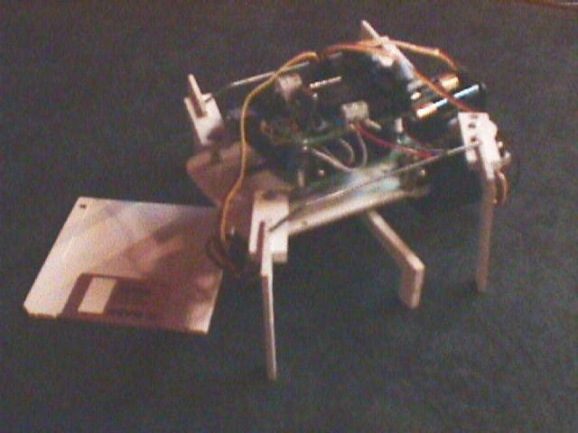
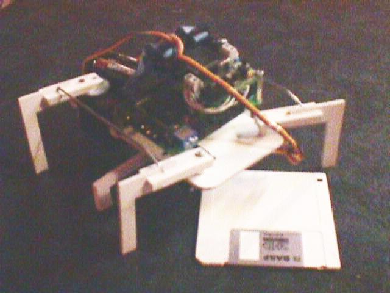

| SHEILA: HEXAPODO CON TRES SERVOS |
MOTIVACIÓN
Ricardo Gómez González(a.k.a eagleman), estudiante en la escuela de informática de la UPSAM, diseñó todas las piezas y construyó la estructura mecánica de SHEILA. Me comentó que la tenía diseíada pero que todavía no le había puesto electránica ni la había hecho andar. Dado que yo ya había trabajado con robots articulados y tenía desarrollado el programa XBT6811 que permite grabar una secuencia de movimiento, para luego ser reproducida, le pedí que me dejase a Sheila para generar una secuencia de movimiento muy simple y ver cómo andaba.
Utilicé una tarjeta BT6811 para la conexión de los servos y una CT6811 para la conexión al PC, y el programa XBT6811 para la generación de la secuencia de movimiento. El resultado fue que SHEILA andaba con bastante gracia ;-), pero eso sí, con un cable de conexión al PC.
Más adelante hice el programa sheila.asm que se graba en la eeprom de la CT6811, y que contiene la secuencia de movimiento, de manera que se convierte en un sistema autónomo.
Aqui puedes ver algunas fotos de SHEILA, aunque la calidad no es muy buena :-(


Aquí hay un vídeo de sheila andando y aquí se dirige hacia la cámara.
AUTORES:
- Ricardo Gómez González(a.k.a Eagleman) : Idea original, piezas, planos, estructura mecánica y construcción de SHEILA
- Juan González Gómez (a.k.a Obijuan): Software y generación de la secuencia de movimiento
LICENCIA: Todo el software se encuentra bajo licencia GPL
DESCRIPCIÓN
La estructura mecánica de Sheila está diseíada de manera que con solo 3 servos se consiguen mover las 6 seis patas. Combinando adecuadamente el movimiento de los servos, sheila se puede mover hacia adelante y hacia atrás.
- Materiales: PVC EXPANDIDO
- Dimensiones: 25x14x7 cm aprox.
- Servos: 3 del tipo Hitec HS-300BB
- Hardware: Tarjetas BT6811 y CT6811
- Software: Programa futA.asm en la BT6811 y sheila.asm en la CT6811
La tarjeta BT6811 se encarga de controlar la posición de los 3 servos, y la tarjeta CT6811 es la que tiene grabada la secuencia de movimiento que se la envía a la BT6811 a través del SPI.
Tambión es posible conectar sheila directamente al PC y controlarla usando el programa XBT6811
DOWNLOAD
FICHEROS PARA DESCARGAR
sheila.asm (5KB) Programa para que sheila ande recto. Para grabar en un 6811E2. Fuentes sheila.s19 (586 Bytes) Programa ejecutable sheila.f4 (76 Bytes) Secuencia de movimiento, para el programa XBT6811 futA.asm (12KB) Programa para grabar en la EEPROM de la tarjeta BT6811. Fuentes planos_sheila.dwg (86KB) Planos de sheila, en formato .dwg planos_sheila.dxf (135KB) Planos de sheila, en formato .dxf planos_sheila.pdf (8KB) Planos de sheila, en formato .pdf sheila1.mpg (343KB) Vídeo de Sheila, andando lateralmente sheila2.mpg (344KB) Vídeo de Sheila, andando hacia la cámara
NOTICIAS 20/Noviembre/2002: Añadidos planos y vídeos de Sheila 27/Agosto/2002: Puesta Sheila en esta web. Descripción y software
AGRADECIMIENTOS: A Ricardo Gómez González, autor original de Sheila, por darme carta blanca para participar en el proyecto A Carlos Soria Heredia, profesor de la UPSAM y responsable del CIT por su apoyo logístico al proyecto. A Iván González, por su ayuda en la grabación de los vídeos .
CREDITOS:
- El programa sheila.asm está basado en el software desarrollado por Andrés Prieto-Moreno Torres para PUCHOBOT
- Tarjeta BT6811, diseíada por Andrés Prieto-Moreno Torres
- Tarjeta CT6811, Microbática